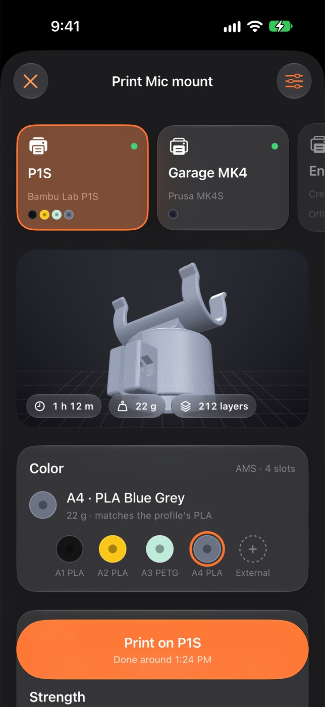
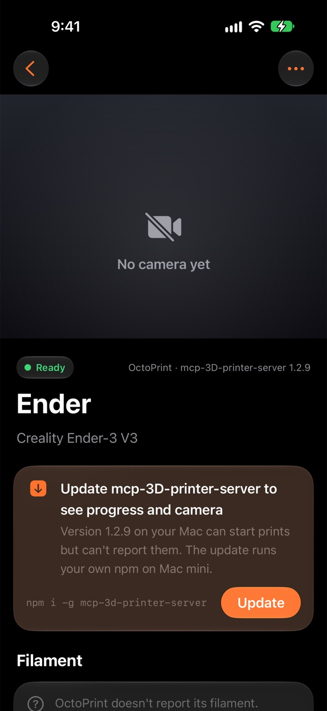

Counterpart Help
Counterpart makes a part that fits something you have, or a copy of it, or prints a model someone published. Your iPhone sends and asks. Your Mac does the work with your own Claude Code and prints on your own printer.
Nothing in the guide mentions . Try a shorter word, or press Escape to see everything.
Set up
- On your Mac, open Counterpart. It lives in the menu bar, with a main window for your projects.
- Sign in to Claude Code on that Mac. Counterpart designs and edits models with your own login.
- Install Blender. Counterpart opens it only while it's working on one of your projects, and quits it afterwards.
- Have your printer's MCP server, Counterpart's printing backend: bambu-printer-mcp for Bambu Lab printers (setup guide), or mcp-3D-printer-server for OctoPrint, Klipper, Duet, Repetier, PrusaLink, Creality and Bambu Lab (setup guide). If you already print from Claude or Codex with one, Counterpart finds it.
- On your iPhone, open Counterpart and pair with your Mac: click the Counterpart icon in the Mac's menu bar and scan the code it shows.


Start a project
Tap + on your iPhone, or New on your Mac. Choose Make something that fits or Copy something, then add as much or as little as you like:
- Describe it. “A hook for a 25 mm tube that holds a mug.” If it's a known product, name it: Counterpart looks up its published sizes.
- Photograph it. One or two photos and a sentence. A ruler or caliper in the picture helps with sizes.
- Scan it with a LiDAR iPhone or iPad. See Scanning and sizes.
- Paste a link to a published model, for example on MakerWorld or Printables. Counterpart prints the designer's own file, credits the designer, and changes only what you ask. If the site needs you signed in, it downloads through your own browser, or picks up the file from your Downloads folder.
On the Mac you can also drop photos, STL, 3MF or USDZ files into a new project. Counterpart names each project for you: tap the name to change it.


Scanning and sizes
Walk around it
Put the object on a table with space around it, in good, even light. Walk slowly around it following the guide on screen, then flip it over if you need the bottom. Matte objects scan best; shiny, clear or very dark ones are hard for any scanner.
With a scan rig
For small objects a turntable rig gives steadier scans, and Counterpart guides each ring. It recommends Kass 3D's scan rig on MakerWorld, which you can print yourself. Its designer describes it as a rig for casual scanning and photography, not professional equipment.
Scan in hand Being fixed
Holding the object and turning it in front of the camera doesn't work yet. Use the walk-around scan, a rig, or photos for now.
Getting the size right
Phone scans are good to a few millimetres. For a part that has to fit exactly, measure the size that matters with a caliper and say it in plain words, or put the caliper in a photo. After it's made, What changed says where each size came from, and which ones were estimated.


While your Mac works
- Each project shows what it's doing and roughly how long is left. You can put your phone down: it tells you when it's ready.
- If your Mac can't see part of the object well enough, it asks: Camera to take a close-up, Photos to pick one, or Best guess to carry on without one.
- When it's ready, check the pictures and the size in millimetres, and turn it in 3D or AR. Ask for changes in plain words, like “make it 2 mm wider” or “the clip is too tight”.
- On the Mac, Activity lists every step it took.


Printing
- Tap Print. Choose the printer, then quality, strength and the number of copies.
- Choose filament from what's loaded on the printer. For multi-colour Bambu prints, each colour goes to the AMS slot that holds it. On a printer that can't report its filament, say what's loaded.
- Counterpart slices it and shows the time and grams before anything starts.
- If your printer's MCP server needs an answer before it prints, Counterpart shows its question exactly as it asks it.
Counterpart doesn't check the build plate for you; the printer does its own checks. Clear the plate before you print, as you normally would.
While it prints, the project shows progress, the layer, the time left and the printer's camera, with Pause and Stop.




Printers and the backend
Your printer's MCP server is Counterpart's printing backend. Counterpart has no slicer or printer code of its own: slicing, AMS colours, the print, progress, the camera, Pause and Stop are all tools in bambu-printer-mcp or mcp-3D-printer-server, the same servers Claude and Codex use. Counterpart finds your printers in the servers you've already set up, and prints through them as they are. It never copies a printer's settings.
Their docs cover everything the server does: slicing, AMS colours, FULU and Bambu Cloud, and the printer tools for Bambu Lab; printer setup, slicing and the printer tools for everything else.
- Settings › Printers on the Mac lists each printer, the MCP server and version that reaches it, and Update when a newer version is out. Updates wait until the printer isn't printing.
- For a Bambu printer on bambu-printer-mcp, Connection chooses how it reaches the printer: Local network, or Bambu Cloud. The MCP server keeps the choice; its FULU guide explains the routes.
- On iPhone, Printers shows each printer, what's loaded and its camera. Choosing a printer's connection is on the Mac for now.




After it prints
- Counterpart asks Did it fit? It works marks the project Done. Needs changes opens Ask for changes, so you can say what's wrong.
- Set a project's status yourself any time: open the project, then … › Status.
- Done projects stay printable: Print another prints it again.
- Hide from Home tidies a project away without deleting it. It's still in your projects, and still Done.
Settings and updates
Most settings are on both devices: notifications, AI, paired devices and general options. Changing one on either device changes it on the Mac. Printer setup and connections are on the Mac.
Your iPhone shows a feature only when the Counterpart on your Mac supports it. If a button in this guide is missing, update Counterpart on the Mac.


Notifications
Counterpart tells you when a project is ready, when your Mac has a question, when a print is halfway (with a frame from the printer's camera), when it finishes, and when something goes wrong. Switch each one off in Settings › Notifications, on either device.


Troubleshooting
My iPhone can't find my Mac
Check that Counterpart is running on your Mac (its icon is in the menu bar). On the same Wi-Fi, check iPhone Settings › Counterpart › Local Network is on. In Counterpart on your iPhone, Settings › Your Mac › Check Connection tries again. If it still can't, quit and reopen Counterpart on the Mac, or pair again with the code from its menu bar.
Making it stopped with an error
The project says what went wrong. The usual cause is Claude Code not being signed in on your Mac. Fix that, then open the project and tap Try Again.
The print didn't start
Open the project: it shows what the printer or its MCP server said. If the printer shows an error on its own screen, clear it there, then print again. The MCP server's docs list what each printer supports: bambu-printer-mcp, mcp-3D-printer-server. If the message says Bambu Cloud refused it (code -3120 or 403), switch the printer's Connection to Local network in Settings › Printers on the Mac.
The size is a little off
Measure the size that matters with a caliper and say it in Ask for changes, like “the tube is 25.4 mm across”. It redoes that part only.
My iPhone camera went black after scanning
An earlier test version could leave the camera unusable after Scan in hand. Restart your iPhone to fix it. Current versions don't do this.
I don't see a button this page mentions
Your iPhone app shows a feature only when the Counterpart on your Mac supports it. Update Counterpart on the Mac, then reopen the app on your iPhone.

Privacy
Counterpart has no accounts. Your scans, photos and projects stay on your Mac. Your iPhone reaches it on your Wi-Fi, or through your own private iCloud when you're away. The one thing that passes through Counterpart's own server is the print update for the Live Activity on your iPhone (the project's name, the printer's name and the progress), because Apple only accepts those pushes signed by the app's maker. Projects are made with your own Claude Code login, so what you send to make a model goes to Anthropic under your own account. The scan clean-up's AI step uses the provider chosen in Settings › AI and sends it the scan's rendered views and your close-ups.
Credits
- Scan rig: Kass 3D on MakerWorld.
- Published models you print are credited to their designers on the project, with a link back to the original.
- Printing: bambu-printer-mcp and mcp-3D-printer-server.
- 3D work: Blender. Open-source licences are listed in the app under Settings › About.